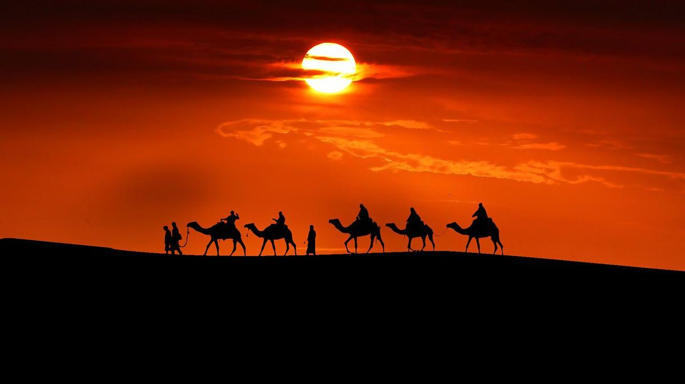

.png)
A Seleção Marroquina de Futebol, conhecida como “Leões do Atlas”, é uma das equipes mais tradicionais do futebol africano e construiu, ao longo das décadas, uma presença marcante na Copa do Mundo FIFA. Representando o norte da África, Marrocos combina talento técnico, organização defensiva e o apoio de uma torcida apaixonada, que acompanha a equipe em qualquer parte do mundo. Desde sua estreia em 1970, o país tem evoluído de forma consistente no cenário internacional, acumulando experiência e enfrentando grandes potências do futebol mundial. Ao longo de suas participações, a seleção demonstrou capacidade de competir em alto nível, protagonizando partidas memoráveis e revelando jogadores de destaque no futebol global.

Um dos momentos mais marcantes da história recente da seleção ocorreu na Copa do Mundo FIFA 2022, quando Marrocos surpreendeu o mundo ao alcançar as semifinais da competição. Com atuações sólidas e disciplinadas, a equipe superou adversários tradicionais, tornando-se a primeira seleção africana a atingir essa fase do torneio. A campanha histórica reforçou o crescimento do futebol marroquino e evidenciou a força coletiva do elenco. Além dos resultados dentro de campo, Marrocos também se destaca pelo investimento no desenvolvimento do futebol nacional e na formação de novos talentos. Com uma base cada vez mais estruturada e jogadores atuando em grandes ligas internacionais, a seleção projeta um futuro promissor, mantendo-se competitiva e ambiciosa nas próximas edições da Copa do Mundo FIFA.